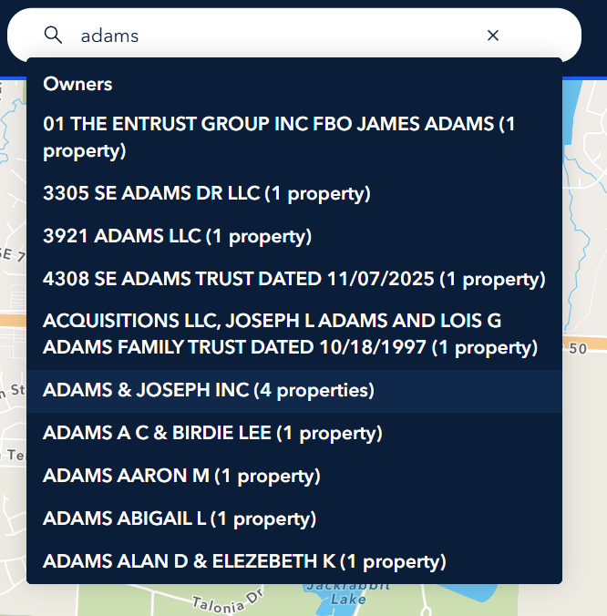
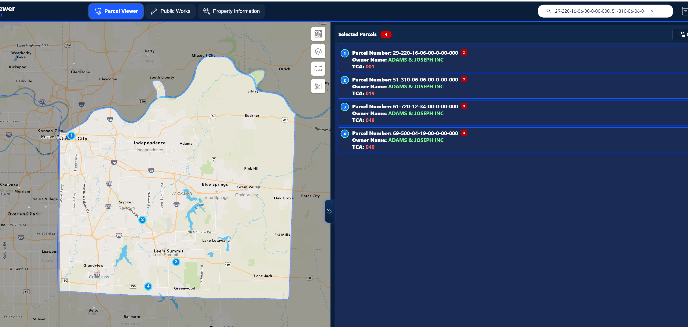
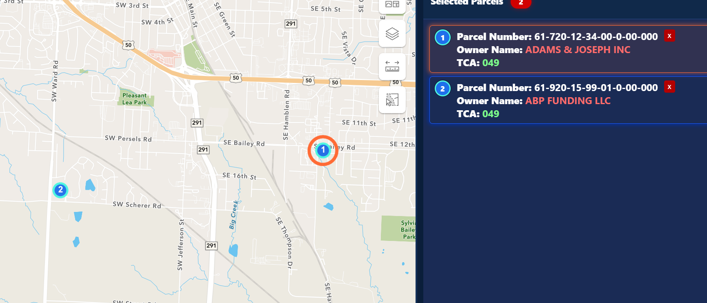

What Changed
This release improves the workflows users touch most often: searching, selecting multiple parcels, and seeing where selected parcels are located on the map.
Data Direction
Parcel details are moving toward AGOL-hosted parcel information, with Tyler-derived values collaborated into AGOL so each parcel can be represented as a single parcel record with the needed values included.
Owner Search
Search by owner name from the Parcel Viewer search bar. Letter-based searches show owner-name results with matching property counts.
- Type an owner name, such as
adams. - Owner suggestions show property counts.
- Selecting an owner selects matching parcels.
- The map zooms out to the selected group.

Pasted Parcel Lists
Paste a list of parcel numbers into search and select them all at once.
- Comma, comma-space, semicolon, and new-line lists are supported.
- Full dashed parcel numbers and 17-digit parcel IDs are supported.
Valid lists select all matching parcels and zoom to the combined extent.

Multi-Select Markers
Multi-selected parcels now have numbered map markers that match the selected parcel list.
- Hover a row to flash the matching point.
- Click a row to zoom to that parcel while keeping the full list selected.
- Remove a parcel and markers renumber automatically.

Selected Parcel List
The selected parcel list now shows current owner name and TCA for multi-selected parcels. These values come from the AGOL Parcel Information service by parcel ID.
This supports the move toward AGOL as the shared parcel-information source for Parcel Viewer.
Quick Summary
- Search by owner name when you know the owner.
- Paste a parcel list when you need to select several parcels at once.
- Use numbered markers to understand selected parcel locations.
- Hover or click a selected row to focus a specific selected parcel.
- Remove parcels as needed. Markers and zoom update automatically.
- Current owner and TCA values are moving through AGOL parcel information.